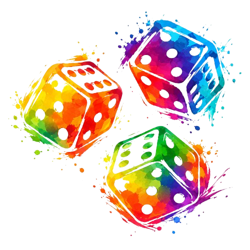
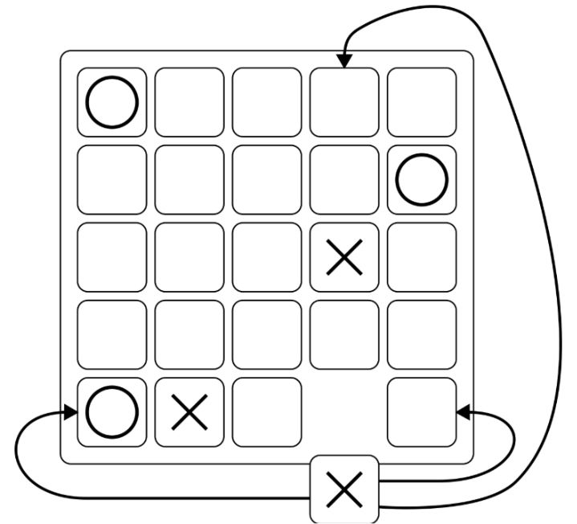
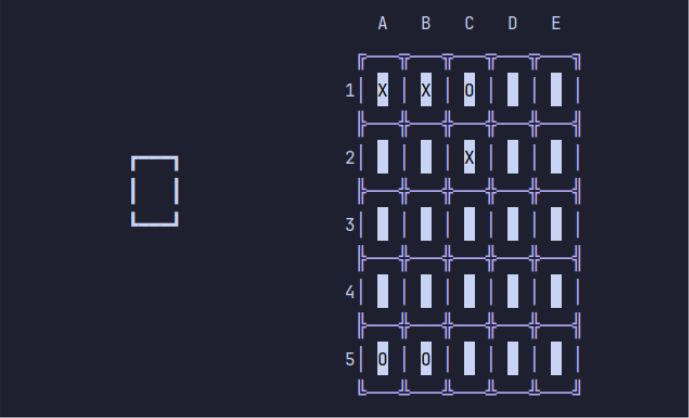

Quixo
L'objectif du projet était de recréer le jeu de plateau Quixo en version numérique.
Fonctionnalités principales
- Sélectionner un pion puis le placer pour décaler toute une ligne ou une colonne du plateau.
Technologies utilisées
Mon rôle
J'ai participé à parts égales avec les quatre autres membres de l'équipe à la conception et au développement du jeu.